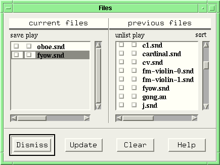
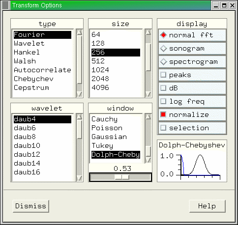
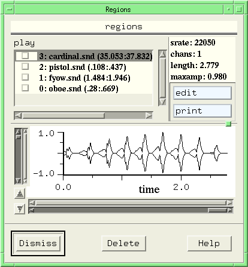
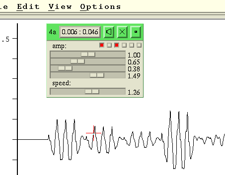
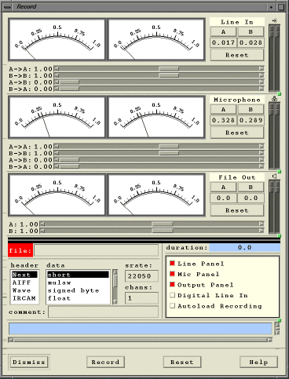
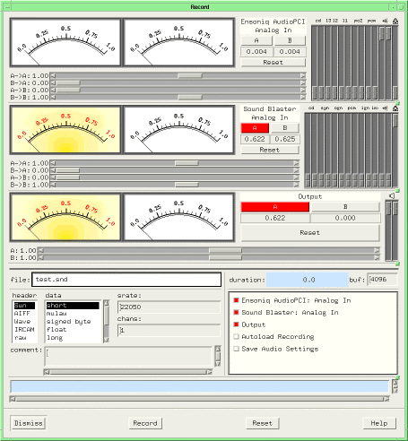

Snd is a sound editor modelled loosely after Emacs and an old, sorely-missed PDP-10 sound editor named Dpysnd. It can accommodate any number of sounds each with any number of channels, and can be customized and extended using either Guile or Ruby. Snd is free; the code is available via anonymous ftp as snd-7.tar.gz. Snd has a home page and a CVS repository.
|
Contents |
Getting Started |
Once compiled and loaded (see README.Snd for instructions), start Snd:
snd some.snd
where "some.snd" is any available sound file. You should get a window with the first .1 seconds of the sound displayed as a time domain waveform. Click the file name at the lower left to get some information about the file. Click the "f" button, and an fft window appears alongside the waveform. Drag the upper scale at the bottom of the graph and both graphs are updated as you move through the file. Drag the lower scale to zoom in or out. Drag the outer scale (the wider one) on the left to change the y axis bounds. The inner scale moves the y axis up and down. Click the "w" button (unset it) and the time domain waveform goes away. Click "play" to play the file. "sync" is more complicated -- it is used to group sounds together for simultaneous editing.
Now return to the time domain form (click "w" and "f"), and click in the graph itself. A red cursor (a big "+") appears at that point. The cursor is just like an Emacs cursor -- you can delete the sample at the cursor, for example, by typing control D (abbreviated in this document C-d), or move back one sample with C-b.
Click and drag the mouse through some portion of the graph -- the portion dragged is highlighted in some way. When you release the mouse button, the highlighted portion becomes a 'selection' that you can play, delete, or mix elsewhere.
You'll notice if you make some change to the data that the file name gets an asterisk, as in Emacs, and the various 'undo' and 'redo' menu options come to life. Just for laughs, delete the selection (via the Edit menu), then click the right mouse button to get the popup menu, and try Undo followed by Redo.
Next type C-m. This places a mark at the current cursor location. C-a goes to the start of the window; C-j jumps forward to the next mark. Click and drag the upper horizontal mark portion to move the mark; click the triangular lower portion to play from the mark. If you are editing a multi-channel file, control-click the triangle to play all channels together from the mark. Drag the triangular portion to play the data following the mouse.
Finally, go to the View menu and select 'Show controls'. A new portion of the Snd window opens, containing a number of controls. Try goofing around with them while playing the sound. For the more complex cases, the button on the right side turns the option on or off.
But this is all standard stuff; even the various dialogs scattered around the menus will present no surprises. The GL spectrograph is somewhat unusual, and I like the paned window approach to multichannel sounds ("de gustibus..."). But it is primarily the embedded extension language (Guile or Ruby) that makes Snd different from other editors. Everything in Snd from the low-level data readers to the high-level editing operations is tied into the extension language. You can do anything you want with sounds. Rather than try to present endless menus full of canned effects, Snd gives you full programming power over sounds, and you can extend it to include whatever you want. But if you are in a big hurry, or not yet confident in your ability as a programmer, many such operations have been included in the various scm (Guile/Scheme) and rb (Ruby) files in the Snd tarball. Dave Phillips wrote a set of files that implement dozens of the effects and editing operations built into other editors. Just load the files that look interesting, and start clicking widgets.
Manipulating sounds in a programming environment is most enjoyable if you can edit and retry expressions easily. Old-time Lispers called this special kind of text widget a "listener". There is one in Snd -- see the View:Open Listener menu. The listener has a prompt (">") at which you can type any expression: (+ 1 2) which it then evaluates, returning the result. I normally work in the listener, leave the menus untouched, and use the mouse to scan through the current sound data.
The rest of this document describes the user interface; extsnd.html presents the programming interface; grfsnd.html describes Snd's connection to various other programs and X; sndscm.html has brief descriptions of most of the Scheme/Ruby code included in the Snd tarball; fm.html is an introduction to FM; clm.html is the basic generator documentation, but it is aimed more at the Common Lisp version of that code than at Snd; sndlib.html describes the underlying sound IO library; libxm.html describes the user-interface extension library.
Dave Phillips has written a tutorial for Snd; I recommend that you start there. I find it very hard to read snd.html without falling asleep, but I don't know how to fix it -- the grumpy programmer in me is grumbling "user interfaces are either obvious or broken".
File Operations |
| File Menu | ||
|---|---|---|
| Open | open a new file | (C-x C-f) |
| Close | close a file, flush any unsaved edits | (C-x k) |
| Save | save current edits, overwriting previous version | (C-x C-s) |
| Save as | save current edits under a new name, stay in current file | |
| Revert | flush edits | |
| Update | re-read file (data changed behind Snd's back) | |
| View | open file read-only | |
| Mix | mix file | (C-x C-q) |
| New | create a new, empty file | |
| Record | record sound producing a new file | |
| produce a Postscript version of current display | ||
| Exit | leave Snd, flushing all pending edits |
When invoked, Snd scans its arguments for file names, and opens any it finds.
snd oboe.snd fyow.snd
If there are no arguments, Snd comes up as a bare menu bar. If a name is preceded by "-p" or "-preload", it is treated as a directory name and all sound files found in that directory are preloaded into the previous files list. To load arbitrary Snd customizations (your own code, or a saved state file), precede the file name with "-l" or "-load" (or use the load function).
snd oboe.snd -l examp.scm
opens the sound file oboe.snd and loads the Scheme code in examp.scm.
Normally Snd adds each new sound below those currently being displayed. To position sounds horizontally (adding on the right), use the "-h" (or "-horizontal") flag, or the horizontalPanes resource. (This only works on systems with Motif 2.0 or later). Other overall layout choices include the Notebook widget (-notebook), and separate windows for each sound (-separate). Such special choices need to be set either in the resource file, or in the invocation line. The default font, for example, is often too small; to get something more readable, you can invoke Snd with an explicit setting:
./snd -xrm "*fontList: 9x15" oboe.snd
or place the equivalent line in your .Xdefaults file:
snd*fontList: 9x15
For more on resources and defaults, see Snd Startup.
A file can be opened from the File menu via Open or View. View opens the file read-only, whereas Open allows it to be changed. The equivalent keyboard command is C-x C-f. If a file cannot be changed (either it was opened read-only or you don't have write permission for it), a lock appears next to the file name. Similarly, if Snd notices that the file on the disk no longer matches the original, a bomb appears. This can happen if some other program writes a sound while you are editing an earlier version of it. If the variable auto-update is #t (the default is #f), Snd automatically updates any such file.
In the file selection dialog, there's a button marked 'Sound files only' (just-sounds). If it is set, the file dialog lists only those files whose extensions are on the sound-file-extension list. The built-in extensions are "snd", "wav", "aiff", "aif", "au", "aifc", "voc", and "wve". To add an extension to this list, use add-sound-file-extension. In the Motif version of Snd, you can also apply an arbitrary function to each such filename, making the filter as fancy as you like (see just-sounds-hook).
Snd can handle the following file and data types:
The files can have any number of channels. Data can be either big or little endian. A 'New' file (one created by the File:New option) can get its type and so on from the default output variables such as default-output-type, or from a dialog that pops up when some field has not been set in advance. Similary, a raw data file gets its srate, chans, and data format information either from the open-raw-sound-hook or from a dialog window that pops up when such a file is opened. The file types listed above as "automatically translated" are decoded upon being opened, translated to some format Snd can read and write, and rewritten as a new file with an added (possibly redundant) extension .snd, and that file is the one the editor sees from then on. To read mpeg files, see the mpg function in examp.scm; there are similar functions for Ogg, FLAC, and Speex files.
Each file has its own 'pane', a horizontal section of the overall Snd screen space; within that section, each channel has a pane, and below the channels is the 'control pane', normally hidden except for the file name and 'minibuffer'. At the very bottom of the Snd window is the lisp listener, if any (see the View menu Open listener option). The panes can all be independently raised and lowered by dragging the pane buttons on the right. Each channel has the four scrollbars setting what portion of the data is displayed; the 'w' button (normally set) which causes the time domain waveform to be displayed; and the 'f' button (normally unset) which includes the frequency domain (FFT) display. There is a third display settable by user-provided functions; if both the 'w' and 'f' buttons are off and there is no active user-display function, you get an empty display. For each sound there is a control panel containing the file name, in parentheses if the file is actually a link, with an asterisk if there are unsaved edits, a 'minibuffer' for various kinds of simple text-based interactions, a 'sync' button for grouped display and edit operations, a 'unite' button (if the sound has more than one channel), and a 'play' button to play the current (edited) state of the file.
To open a new, empty file, use the File:New option. The default values for the fields can be set via default-output-chans, default-output-format, default-output-srate, and default-output-type. The name field can be set upon each invocation through output-name-hook, and the comment field via output-comment-hook.
To close a file (flushing any unsaved edits), use the File:Close option, or C-x k. This command applies to the currently selected sound.
To save the current edited state of a file, use the Save option (to overwrite the old version of the file), or Save as (to write to a new file, leaving the old file unchanged). The equivalent keyboard command is C-x C-s (save). Other related keyboard commands are C-x w (save selection as file), and C-x C-w (extract and save the current channel as a file). Normally, if the new file already exists, and it is not currently being edited in Snd, it is silently overwritten. If you try to overwrite a file, and that file has active edits in a different Snd window, you'll be asked for confirmation. If you want Snd to ask before overwriting a file, set the variable ask-before-overwrite to #t. If you edit a write-protected file and try to save the edits, Snd will try to save the edits in a temporary file and will post a warning that the current file can not be overwritten.
To undo all edits and return to the last saved state of a file, use the Revert option. The edit history is still available, so you can redo all the edits in order simply by calling Redo repeatedly. There's also a list on the left of each channel pane containing a list of the current edits. You can click anywhere in the list to move to that edit.
The Print option opens the Print dialog. You can send the currently active graph directly to a printer, or save it as an encapsulated Postscript file. The default name of this file is "snd.eps"; it can be set via eps-file.
To mix files, see "Mix Files". To record a file, see "Record Files".
Finally, to exit Snd cleanly (that is, removing any temporary files, and cleaning up some system stuff), use the Exit option. Unsaved edits are silently flushed (but see the function check-for-unsaved-edits in extensions.scm).
The Display |
| View Menu | ||
|---|---|---|
| Show controls | show the control panel | (C-x C-o, C-x C-c) |
| Open listener | show lisp listener | |
| Mixes | mix browser | |
| Tracks | track browser | |
| Regions | a browser to examine the region stack | |
| Files | a browser of currently and previously loaded files | |
| Color | a browser that chooses color maps | |
| Orientation | a browser that sets spectrogram and wavogram orientation | |
| Channel style | separate, combined or superimposed channels | |
| Graph style | use dots, lines, filled polygons etc in the data displays | |
| Verbose cursor | describe the current sample every time the cursor moves | |
| Equalize Panes | cleanup current Snd display | |
| Show y=0 | show or hide the y=0 line | |
| X axis units | x axis labelled in seconds, samples, percent of total | |
| Error History | a list of saved error messages |
The sound display can be modified in various ways. Choose View:Graph style:dots to view the sound as dots rather than connected lines (see also dot-size). Similarly, to show (or hide) the line Y = 0, use the y=0 option. The Region browser is described under Regions. To open the control panel, use Show Controls. To open or close the lisp listener, use Open listener. When many files are displayed, and the pane buttons have been in use, the overall display can become a bit of a mess. To return to a state where each file and channel has a 'normal' amount of space, use the Equalize Panes option.
The Color and Orientation options activate windows that set various aspects of the sonogram, spectrogram, and wavogram displays. There are fifteen or so colormaps available along with ways to invert the maps, and scale (darken) them differently according to screen or printer characteristics.
The Popup menu's Info dialog can be left in view and updated with M-v i to reflect the currently active sound. The same information is displayed in the minibuffer when you click the file name.
The Files option starts the file browser:
The file browser window shown here provides two lists, one of the currently active files in Snd, and the other of previously active files. The currently selected sound is highlighted. The play button plays the file. Click a current file name, and that sound becomes the selected sound in the main Snd window. Click a previous file name, and that file is opened in Snd. The 'update' button runs through the previous files list checking for files that have been deleted or moved behind Snd's back. 'Clear' clears the previous files list.
The previous files list can be preloaded via the -p switch to Snd, and the functions preload-file and preload-directory. By preloading your "working set" of sounds, you can avoid the bother of picking them up one by one from the clumsy file selection box. See nb.scm for an extension of this dialog that posts various kinds of information about each file as the mouse passes over it.
The Error History displays whatever errors have been posted during the current run of Snd. If some error gets erased too quickly from the 'minibuffer', you can find it in this dialog.
The Regions and Mix Dialog options are described below.
Other Options |
| Options Menu | ||
|---|---|---|
| Transform options | various transform (FFT, etc) choices | |
| Zoom focus | where to focus during zooms | |
| Save options | save current state of options | |
| Save state | save current state |
Transform Options applies mainly to the FFT display triggered by setting the 'f' button in the channel window. The dialog that is launched by this menu item has six sections: on the upper left is a list of available transform types; next on the right is a list of fft sizes; next is a panel of buttons that sets various display-oriented choices; the lower left panel sets the current wavelet, when relevant; next is the fft data window choice; and next to it is a graph of the current fft window with the spectrum of that window in blue. When the window has an associated parameter (sometimes known as "alpha" or "beta"), the slider beneath the window list is highlighted and can be used to choose the desired member of that family of windows.
The FFT is taken from the start (the left edge) of the current window and is updated as the window bounds change. If you'd like the fft size to reflect the current time domain window size:
(add-hook! graph-hook
(lambda (snd chn y0 y1)
(if (and (transform-graph?)
(= (transform-graph-type) graph-once))
(set! (transform-size)
(expt 2 (ceiling (/ (log (- (right-sample)
(left-sample)))
(log 2.0))))))))
The fft data is scaled to fit between 0.0 and 1.0 unless transform normalization is off. The full frequency axis is normally displayed, but the axis is dragable -- put the mouse on the axis and drag it either way to change the range (this is equivalent to changing the variable spectro-cutoff). You can also click on any point in the fft to get the associated fft value at that point displayed; if verbose-cursor is on, you can drag the mouse through the fft display and the description in the minibuffer will be constantly updated.
The transform is normally the Fourier Transform, but others are available, including about 20 wavelet choices, and autocorrelation.
The top three buttons in the transform dialog choose between a normal fft, a sonogram, or a spectrogram. The peaks button affects whether peak info is displayed alongside the graph of the spectrum. The dB button selects between a linear and logarithmic Y (magnitude) axis. The log freq button makes a similar choice along the frequency axis.
The easiest way to change the colormap and graph orientation of the spectrogram, wavogram, and sonogram, is to use the Color and Orientation dialogs from the View menu. The keypad keys are mapped to various variables as follows:
| variable | increase | decrease |
|---|---|---|
| spectro-cutoff | PageUp | PageDown |
| spectro-hop | Add (+) | Subtract (-) |
| spectro-z-angle | RightArrow | LeftArrow |
| spectro-x-angle | Ctrl-UpArrow | Ctrl-DownArrow |
| spectro-y-angle | Ctrl-RightArrow | Ctrl-LeftArrow |
| spectro-z-scale | UpArrow | DownArrow |
| transform-size | Multiply (*) | Divide (/) |
| dot-size | Delete | Insert |
You can rotate the spectrogram around the various axes by holding down the keypad and control keys. You can get arbitrarily small or large ffts with the Multiply and Divide keys. The x and y axis scalers are named spectro-x-scale and spectro-y-scale. The keypad Enter key resets all the spectrogram variables to their default values.

A somewhat frivolous feature, known here as the
"wavogram", mimics the spectrogram in the time domain.
The same rotation commands apply to this display,
with the additional variable wavo-hop which sets the
density of the traces. To get this display (set! (time-graph-type) graph-as-wavogram). It is
important to set the length of each trace
so that successive peaks line up. The
trace length in samples is set by the variable wavo-trace,
or the numeric keypad + and - keys.
The Save options menu option is a part of the customization process. It sets up (or adds to) an initialization file (normally ~/.snd) that sets all the options to their current settings, similar to Emacs' ~/.emacs file.
The Zoom style option chooses which graph point to center on during an x-axis zoom. The default is to zoom onto the cursor or the beginning of the current selection if either is visible. You can also have zoom focus on the left edge, right edge, or midpoint of the current window.
Edit Operations |
| Edit Menu | ||
|---|---|---|
| Undo | Undo last edit | (C-x C-u or C-_) |
| Redo | Redo last edit | (C-x C-r) |
| Find | Global search via find dialog | (C-s, C-r) |
| Cut | Cut (delete) selected portion | |
| Paste | Paste (insert) selected portion | (C-y, C-x i) |
| Mix selection | Mix (add) selected portion | (C-x q) |
| Play selection | Play selected portion | (C-x p) |
| Save selection | Save selected portion as file | (C-x w) |
| Select all | select entire file | |
| Edit Envelope | Edit or view envelopes | |
| Edit Header | Edit or view file header |
Editing in Snd is modelled after Emacs in many regards. Each channel has a cursor (a big "+"), a set of marks, and a list of edits that have not yet been saved. Most operations take place at the cursor. Operations can be applied simultaneously to any other channels or sounds by using the 'sync' button. Operations can be applied either to a sample, a selected portion, a channel, a sound, or any number of sounds at the same time. Where an operation has an obvious analog in text editing, I've tried to use the associated Emacs command. To delete the sample at the cursor, for example, use C-d.
The following sections describe how to move the cursor and the window; how to change which channel is active; how to use marks and regions; how to perform various common editing operations. It ends with a description of all the mouse and keyboard editing commands. The 'control panel' provides more complex editing operations, but has a chapter to itself.
The Active Channel and The Cursor |
Click in the time domain waveform to activate the cursor and select that channel. To make the selected channel stand out from the rest, set the selected-data-color or the selected-graph-color:
(define beige (make-color 0.96 0.96 0.86)) (define blue (make-color 0 0 1)) (set! (selected-graph-color) beige) (set! (selected-data-color) blue)
The selected channel receives keyboard commands. You can also move between windows with C-x o.
Any mouse click on the waveform causes the cursor to move to that point. To move the cursor from the keyboard, use:
< move cursor to sample 0 > move cursor to last sample C-< move cursor to sample 0 C-> move cursor to last sample C-a move cursor to window start C-e move cursor to window end C-b move cursor back one sample C-f move cursor ahead one sample C-n move cursor ahead one 'line' C-p move cursor back one 'line' C-v move cursor to mid-window C-i display cursor info C-j go to mark C-x j go to named mark
All keyboard commands accept numerical arguments, as in Emacs. If the argument is a float, it is multiplied by the sampling rate before being applied to the command, so C-u 2.1 C-f moves the cursor forward 2.1 seconds in the data.
The simplest way to move the window (the portion of the data in the current graph) is to drag the scrollbars with the mouse. The darker scrollbars zoom in and out; the lighter bars move the window along the x or y axis. To move by a single windowful, click the arrows on the scrollbar. To move by smaller amounts, use the left and right arrow keys (or zoom with the up and down arrow keys); the control, shift, and meta keys are multipliers on this movement -- each key adds a factor of .5 to the multiple, so to move by .25 windows, press control, meta, left (or right) arrow. A similar mechanism can be used to zoom quickly onto a particular point; hold the keys and click the mouse in the waveform and you'll zoom an increasing amount into the data at that point.
Various keyboard commands provide much more precise control of the window bounds and placement:
C-l position window so cursor is in the middle C-x b position window so cursor is on left margin C-x f position window so cursor is on right margin [Down] zoom out, amount depends on shift, control, and meta [Up] zoom in [Left] move window left [Right] move window right C-x l position selection in mid-view C-x v position window over current selection C-x C-b set x window bounds (preceded by number of leftmost sample) C-x C-p set window size (preceded by size as numeric argument)
As in most other cases, the sample numbers (or sizes) can be floats; if the argument is not an integer, it is multiplied by the sampling rate before being applied to the command. So, C-u .1 C-x C-p makes the window display .1 seconds of data. If you'd like far more precise window moving and zooming control, see move-one-pixel and zoom-one-pixel.
Marks |
A 'mark' marks a particular sample in a sound (not a position in that sound). If we mark a sample, then delete 100 samples before it, the mark follows the sample, changing its current position in the data. If we delete the sample, the mark is also deleted; a subsequent undo that returns the sample also returns its associated mark. I'm not sure this is the right thing, but it's a lot less stupid than marking a position.
Once set, a mark can be moved by dragging the horizontal tab at the top. Control-click of the tab followed by mouse drag will drag the underlying data too, either inserting zeros or deleting data. Click on the triangle at the bottom to play (or stop playing) from the mark; drag the triangle to play following the mouse.
A mark can be named or unnamed. It it has a name, it is displayed above the horizontal tab at the top of the window. As with sounds and mixes, marks can be grouped together through the sync field; marks sharing the same sync value (other than 0) will move together when one is moved, and so on. See the marks chapter for a further discussion of synced marks. The following keyboard commands relate to marks:
C-m place (or remove if argument negative) mark at cursor C-M place syncd marks at all currently syncd chan cursors C-x / place named mark at cursor C-x C-m add named mark C-j go to mark C-x j go to named mark
The distance from the cursor to a mark can be used as a numeric argument for other commands by following C-u with C-m. Any number in-between is the number of marks to jump forward before getting the distance.
The function save-marks saves the current marks in a file.
Regions |
A region is a portion of the sound data. Although I'm not completely consistent in this document, the word "selection" is used to refer to the currently selected (and highlighted) portion of the data; an operation such as filter-selection affects the underlying data. A "region" on the other hand, refers to the saved (copied) version of (the original form of) that data that can be inserted or mixed elsewhere. That is, when a portion is selected, it is (by default) saved as the new region; subsequent edits will not affect the region data. You can disable the region creation by setting the variable selection-creates-region to #f (its default is #t which can slow down editing of very large sounds). Regions can be defined by make-region, by dragging the mouse through a portion of the data, or via the Select All menu option. If the mouse drags off the end of the graph, the x axis moves, in a sense dragging the data along to try to keep up with the mouse; the further away the mouse is from the display, the faster the axis moves. (One minor caveat: if you drag the mouse too quickly off the end of the graph, making a grand sweeping gesture, the last portion of the graph may be missed because the mouse updates are coalesced by X; move deliberately as you near the end of the sound). In large sounds, the mouse granularity can be large, but you can zoom onto the start or end of the selected portion and move them using selection-position and selection-frames. A region can also be defined with keyboard commands, much as in Emacs. C-[space] starts the region definition and the various cursor moving commands continue the definition.
Once defined, the copied region is added to a list of currently available regions (the maximum list size is normally 16 -- see max-regions). The currently available regions can be view from the View menu's Region browser:
The 'print' button produces a Postscript rendition of the current graph contents, using the default eps output name. 'play' plays the region. The graphical display shows the waveform with arrows to move around in the channels of multi-channel regions. The 'edit' button loads the region into the main editor as a temporary file. It can be edited or renamed, etc. If you save the file, the region is updated to reflect any edits you made.
The keyboard commands that apply to regions are:
C-y paste in current selection at cursor C-[space] start keyboard-based selection definition C-x a apply amplitude envelope to selection C-x c define selection from cursor to nth mark C-x i insert selection C-x p play selection or region (numeric arg selects region) C-x q mix in selection C-x w save selection as file C-x l position selection in mid-view C-x v position window over current selection
If the current selection is active (displayed somewhere in the current time domain displays), there are lots of functions that can edit that portion of the current sounds. If the 'selection' button is set in the transform options dialog, (or equivalently, show-selection-transform is #t), the fft display, if any, displays the transform of the selected portion.
The Edit List |
The current state of the undo/redo list can be viewed as a scrolled list of strings in the pane on the left of the graph. If there are no current edits, it just lists the associated file name (i.e. the zero-edits state). As you edit the sound, the operations appear in the edit list window. Click on a member of the list to move to that point in the edit list (equivalent to some number of undo's or redo's).
The function save-edit-history saves the current edit list as a loadable program (assuming the base sounds haven't changed in the meantime). The file can be edited (it's just a text file with comments). See Edit Lists for more details.
How to... |
Most of these kinds of operations are accessible from the File menu. They can also be invoked from the keyboard:
C-x k close currently selected file C-x w save selection as file C-x C-d print C-x C-f open file C-x C-s save file C-x C-w save currently selected channel as file
The Print command produces a PostScript file which can be sent to directly a printer or saved for later use.
The fastest way to delete a section is to drag the mouse through it and call the Edit menu's Delete selection option. Any region can be pasted or mixed in using C-x q and C-x i with a numeric argument (the region number); the current selection can be pasted in by clicking the middle mouse button. The associated keyboard commands are:
C-d delete sample at cursor C-h delete previous sample C-k delete a 'line' -- 128 samples C-w delete current selected portion C-o insert a zero sample at cursor C-x i insert region at cursor (arg = region number) C-x C-i insert file C-y paste in current selection at cursor C-x q mix in region (arg = region number) C-x C-q mix in file
Insertion takes place just ahead of the cursor; to insert after the cursor, define a command something like:
(bind-key (char->integer #\i) 0 (lambda () "insert region after cursor" (insert-region (1+ (cursor)))))
Normally each operation applies only to the currently active channel. If, however, the sound's 'sync' button is set, the operations apply to every sound or channel that also has the sync field set to the same value. If you click the 'sync' button, its value is 1 and its color is blue; C-click gives 2 and green, C-M-click gives 3 and yellow; C-M-Shift-click gives 4 and red; any other value (set via the syncing function) shows as a black button. The point of all this is that only those sounds that share the sync value of the current sound are considered to be sync'd to it; for example, to make a stereo selection in one file, then paste it into some other stereo file, set the sync buttons in each sound, but use different values; that way, the channels within each sound are sync'd together (giving stereo operations), but the sounds themselves are separate.
A multichannel sound also has a 'unite' button to the left of the 'sync' button. If this button is set, all channels are displayed in one graph; the x and y-axis scrollbars apply to all the channels at once, as do the 'f' and 'w' buttons; two new scrollbars appear on the right of the window; the furthest right scrollbar affects the placement of the window within the overall set of graphs, and the scrollbar on its left zooms in and out of the overall graph. For stereo files, this is user-interface overkill, but the hope is to accommodate sounds with many channels. The View menu Channel style option has the same effect but applies to all active multichannel sounds. Control-click the unite button to get superimposed channels. If the channels are not combined (the default), control-click the 'f' or 'w' button in one channel to affect all channels at once.
The superimposed channels display is not very useful if you're trying to edit the sound; it's aimed more at FFT comparisons and so on.
To get multi-channel selections, set the sync button, then define the selection (by dragging the mouse) in one channel, and the parallel portions of the other channels will also be selected.
An envelope in Snd is a list of x y break-point pairs. The x axis range is arbitrary. To define a triangle curve: '(0 0 1 1 2 0). There is no preset limit on the number of breakpoints. Envelopes can be defined with define and referred to thereafter by name. Use the envelope editor to draw envelopes with the mouse.
To apply an envelope to a sound, use the extended command C-x C-a. If this command gets a numeric argument, the envelope is applied from the cursor for that many samples. Otherwise, the envelope is applied to the entire file.
C-x a apply amplitude envelope to selection C-x C-a apply amplitude envelope to channel
You can also specify an envelope name to the C-x C-a prompt.
To scale a file or selection by or to some amplitude, use the functions:
scale-by args scale-to args scale-selection-by args scale-selection-to args
scale-by scales the current sync'd channels by its arguments, and scale-to scales them to its arguments (a normalization). The arguments in each case are either a list of floats corresponding to each successive member of the current set of sync'd channels, or just one argument. In the latter case, scale-by uses that scaler for all its channels, and scale-to normalizes all the channels together so that the loudest reaches that amplitude (that is, (scale-to .5) when applied to a stereo file means that both channels are scaled by the same amount so that the loudest point in the file becomes .5). There's one special case here: if you (scale-to 1.0) in a sound that is stored as short ints and you haven't set the data-clipped variable to #t, since 1.0 itself is not representable, the actual scaled-to value is just less than 1.0 to avoid the (unwanted) wrap-around.
Searches in Snd refer to the sound data, and are,
in general, patterned after Emacs. When you type
C-s or C-r, the minibuffer below the graph is
activated and you are asked for the search expression.
The expression is a
function that takes one argument, the current
sample value, and returns #t when it finds a match.
To look for the next sample that is greater than
.1, (lambda (y) (> y .1)). The
cursor then moves
to the next such sample, if any.
Successive C-s's
or C-r's repeat the search. C-x C-s can redefine the
search pattern, which is also cleared by various other
commands, much as in Emacs.
The search commands are:
C-r find backwards C-s find forwards
These searching functions can be closures; the following searches for the next positive-going zero crossing, placing the cursor just before it:
(define (zero+)
(let ((lastn 0.0))
(lambda (n)
(let ((rtn (and (< lastn 0.0)
(>= n 0.0)
-1)))
(set! lastn n)
rtn))))
Now C-s (zero+) followed by C-s's moves to successive zero crossings. There are more examples in sndscm.html. See also the functions find and count-matches.
The simplest changes are:
C-z set current sample to zero C-x C-z smooth data using cosine (smooth-sound)
M-x (set! (sample (cursor)) .1) sets the sample at the cursor to .1. To set several samples to zero, use C-u <number> C-z.
Snd supports 'unlimited undo' in the sense that you can move back and forth in the list of edits without any limit on how long that list can get. The data displayed is always the edited form thereof. Each editing operation extends the current edit list; each undo backs up in that list, and each redo moves forward in the list of previously un-done edits. Besides the Edit and Popup menu options, there are these keyboard commands:
C-x r redo last edit C-x u undo last edit C-x C-r redo last edit C-x C-u undo last edit C-_ undo last edit
Revert is the same as undoing all edits.
To play a sound, click the 'play' button. If the sound has more channels than your DAC(s), Snd will (normally) try to mix the extra channels into the available DAC outputs. While it is playing, you can click the button again to stop it, or click some other file's 'play' button to mix it into the current set of sounds being played. To play from a particular point, set a mark there, then click its 'play triangle' (the triangular portion below the x axis). (Use control-click here to play all channels from the mark point). To play simultaneously from an arbitrary group of start points (possibly spread among many sounds), set syncd marks at the start points, then click the play triangle of one of them. To 'rock the reels', that is to play while dragging the mouse back and forth, drag the mark's play triangle. The Edit menu 'Play' option plays the current selection, if any. The Popup menu's 'Play' option plays the currently selected sound. And the region and file browsers provide play buttons for each of the listed regions or files. If you hold down the control key when you click 'play', the cursor follows along as the sound is played. If 'verbose cursor' is on, the time is also displayed in the minibuffer. If you stop the play in progress, the cursor remains where you stopped it, but otherwise returns to its original position. Type space (without control) to pause and continue during playback. The color of the play button corresponds to the state of the playback: normal: not playing, blue: playing, green: playing and tracking with the cursor (if any), red: playback paused.
If you're getting
interruptions while playing a sound (stereo 44.1 kHz sounds can be problematic),
try using a very large dac buffer. Use set! to change this:
(set! (dac-size) 65536).
If you're getting clicks in Linux despite a large dac-size, try setting the OSS fragment sizes by hand:
(mus-audio-set-oss-buffers fragments fragment-size). OSS's
defaults are 16 and 12 which make the control panel controls very sluggish. Snd used to
default to 4 and 12, but this seems to cause trouble for a variety of new sound cards.
My initialization file uses (mus-audio-set-oss-buffers 2 12).
The keyboard commands for playing are:
C-q play current channel starting at the cursor C-t stop playing C-x p play region (numeric arg selects region)
In a multi-channel file, C-q plays all channels from the current channel's cursor if the sync button is on, and otherwise plays only the current channel. Except in the browsers, what is actually played depends on the control panel. Both C-q and C-x p allow overlapped plays; that is, if you type C-q several times in succession, you'll hear several simultaneous renditions of the sound. The various 'play' buttons scattered around Snd on the other hand, interrupt the current play if you click them during a run. C-g stops any current playing. If no numeric argument is supplied, C-x p plays the currently active selection.
Mixing (adding, not multiplying by a sinusoid) is the most common editing operation performed on sounds, so there is relatively elaborate support for it in Snd. To mix in a file, use the File Mix menu option, the command C-x C-q, drag-and-drop it into its new home, or use one of the many mixing functions. Currently the only difference between the first two is that the Mix menu option tries to take the current sync state into account, whereas the C-x C-q command does not. To mix a selection, use C-x q. In drag-and-drop, the mix starts at the mouse location; in the other cases, the default is to start at the current cursor location. The mixed-in sound is displayed as a separate waveform above the main waveform with a red tag at the beginning. You can drag the tag to reposition the mix. The amplitude, amplitude envelope, and speed (resampling rate) of the mixed-in portion can be changed independently of anything else either through such functions as mix-amp, or through the View:Mix Dialog.
The Mix Dialog (under the View Menu) provides various commonly-used controls on the currently chosen mix. At the top are the mix id (an integer), begin and end times, and a play button for the mix, followed by the track number, a play button for the track, and a panning button (that icon is a pan...). If the pan button is set, the track amplitude envelope is inverted before being applied to the mix; in conjunction with the un-inverted case, this treats the track envelope as a panning control. Beneath all that are various sliders controlling the speed (resampling rate) of the mix, and the amplitude of each input channel; and finally, an editor for the mix's (input) channels. The current mix amp env is not actually changed until you click 'Apply Env'. The editor envelope is drawn in black with dots whereas the current mix amp env (if any) is drawn in blue.
By default, each mixed-in sound is considered separately from all the others, but you would sometimes rather treat both channels of a stereo mix as one thing, or group several mixed-in sounds together. These groups are called "tracks" in Snd, and there are a variety of functions and hooks that apply to them. See Mixes and Tracks for details, and mix.scm for examples. The track dialog is very similar to the mix dialog, providing the same kinds of controls.
To move the cursor from one mix to the next, in the same manner as C-j moves through marks, use C-x C-j.
The function make-sound-box produces a container with each sound represented by an icon; you can drag-and-drop the icon to the place where you want it mixed, or drop it on the main menubar to open it.
As in Emacs, C-x ( begins keyboard macro definition, C-x ) ends it, and C-x e executes the last keyboard macro. Unlike Emacs, C-x C-e prompts for a name for the last defined macro; M-x name invokes the macro "name", and the function save-macros saves all currently named macros. See the lisp section for more details.
To change the sound file's header or data format, use the File or Edit menu Save as option. Choose the header type you want, then the data format, (the data format list will change depending on the header choice). The File:Save dialog saves the currently selected sound. The Edit:Save dialog saves the selection in a new file.
The easiest way to extend the file is to pad it with zeros. Go to the end of the file, via the C-> command, then use the C-u command with a float argument, giving the number of seconds to add to the end of the file, followed by C-o (insert zeros): to add a second, C-> C-u 1.0 C-o. The same sequence can be used to add silence to the start of a file. Functions such as insert-sound automatically pad with zeros, if necessary.
To make a recording, choose Record from the File menu. A window opens with the various recording controls (SGI and Linux shown below):
The top three panes display the status of the input and output lines. If a channel is active, its meter will glow yellow. If some signal clips during recording, the meter will flash red. The numbers below the channel buttons indicate the signal maximum since it was last reset. The sliders underneath the meters scale the audio data in various ways before it is mixed into the output. The vertical sliders on the right scale the in-coming signals before the meter, and the output signal before it gets to the speaker (these are needed to avoid clipping on input, and to set the 'monitor' volume of the output independent of the output file volume).
The fourth pane has information about the current output file (its name and so on), and the layout of the window. The buttons on the right can be used to open and close panes painlessly. If the button is not square (a diamond on the SGI), the underlying audio hardware can't handle input from that device at the same time as it reads other radio button devices. So, in that case, opening the panel via the button also turns off the other incompatible device. The 'autoload' button, if set, causes the newly recorded file to be loaded automatically into Snd.
The fifth pane contains a history of whatever the recorder thought worth reporting. The duration field gives the current output file's duration. The bottom row of buttons dismiss the window, start recording, cancel the current take, and provide some help.
To make a recording, choose the inputs and outputs you want; for example, to record channel A from the microphone to channel A of the output file, click the Microphone panel's A button and the Output panel's A button. Then when you're ready to go, click the Record button. Click it again to finish the recording. The default is to provide up to two channels of output; if you want to write output files with more channels, set the recorder-out-chans variable before invoking the recorder.
If the record window's VU meters are too big (or too small) for your screen, you can fool around with the variable vu-size which defaults to 1.0. Similarly the variable vu-font-size tries to change the size of the numbers on the label, and vu-font chooses the family name of the font used (normally courier).
The description above is aimed at the SGI Indy; in other systems, the layout may be different. In general, each separate pane reflects an independent digital data stream; the vertical sliders on the right reflect various hardware gains or tone controls that are applied before the signal gets to the ADC, or in the case of output, after it has been read in, scaled, and mixed into the output; in Linux the actual meaning of some of these sliders is an industry secret, so some experimentation may be needed. The basic signal flow can be viewed as coming in on the right of the input panels, scaled in the sound card hardware by the vertical sliders, passed through the ADC (if any), reflected in the VU meters, then scaled by the horizontal sliders of the input panel, mixed into the output signal, scaled by its horizontal sliders, reflected in its VU meters, then written to the output file, while another copy passes out the right side of the output panel to the speakers scaled by the output (vertical) sliders. The bizarre icon next to the microphone in Linux is supposed to mean line-in.
Sometimes it is more convenient to have the recorder start writing the output file data only after some threshold amplitude has been reached. The scale bar in the lower right marked "trigger:" sets this value. If it is 0.0 (the default), the recording begins as soon as you push the Record button. Otherwise, the recording begins after you push Record and after the triggered value is noticed in the output (modulo buffer crossings -- sometimes you'll get up to a buffer's worth of whatever preceded that value). In this case, the button is labelled "Triggered Record".
If there are so many input and output channels active that more than eight sliders would be needed in a given pane, the recorder tries to conserve tight screen space by showing only the direct cases, chan0 to chan0, chan1 to chan1, and so on. It also posts a box of buttons to the left of the meters, each button representing a slider. If the button is on (green), the corresponding slider is displayed. Press one of the buttons to toggle whether its slider is displayed or hidden. It is also (supposed to be) possible to drag the mouse through the box of buttons, setting (button 1) or unsetting (button 2) buttons as you go. Click in the corner (the '/' label) to set all (button 1) or unset all (button 2). Similarly, click above a column or to the left of a row to set (button 1) or unset (button 2) the entire column or row. Control-click in the corner to return to the default settings.
To move all the output sliders together, use control-drag.
The Edit Envelope dialog (under the Edit menu) opens a window for viewing and editing envelopes. The dialog has a display showing either the envelope currently being edited or a panorama of all currently loaded envelopes. The current envelope can be edited with the mouse: click at some spot in the graph to place a new breakpoint, drag an existing breakpoint to change its position, and click an existing breakpoint to delete it. The Undo and Redo buttons can be used to move around in the list of envelope edits; the current state of the envelope can be saved with the 'save' button, or printed with 'print'.
Envelopes can be defined using defvar, and loaded from a separate file of envelope definitions via load:
(defvar ramp '(0 0 1 1)) (defvar pyramid '(0 0 1 1 2 0))
defines two envelopes that can be used in Snd wherever an envelope is needed (e.g. C-x C-a). You can also define a new envelope in the dialog's text field; '(0 0 1 1) followed by return creates a ramp as a new envelope.
In the overall view of envelopes, click an envelope, or click its name in the scrolled list on the left to select it; click the selected envelope to load it into the editor portion, clearing out whatever was previously there. To load an existing envelope into the editor, you can also type its name in the text field; to give a name to the envelope as it is currently defined in the graph viewer, type its name in this field, then either push return or the 'save' button.
Once you have an envelope in the editor, you can apply it to the current sounds with the 'Apply' or 'Undo&Apply' buttons; the latter first tries to undo the previous edit, then applies the envelope. The envelope can be applied to the amplitude, the spectrum, or the sampling rate. The choice is made via the three buttons marked 'amp', 'flt', and 'src'. The filter order is the variable enved-filter-order which defaults to 40. To use fft-filtering (convolution) instead, click the "fir" button, changing its label to "fft". If you are displaying the fft graph of the current channel, and the fft is large enough to include the entire sound, and the 'wave' button is set, the spectrum is also displayed in the envelope editor, making it easier to perform accurate (fussy?) filtering operations.
To apply the envelope to the current selection, rather than the current sound, set the 'selection' button. To apply it to the currently selected mix, set the 'mix' button. In this case, if the mix has multiple input channels, the envelope is applied to the currently selected channel (the one with the red label); control-click 'mix' to load the current mix amplitude envelope into the editor.
The two toggle buttons at the lower right choose whether to show a light-colored version of the currently active sound (the 'wave' button), and whether to clip mouse movement at the current y axis bounds (the 'clip' button). The 'linear' and 'exp' buttons choose the type of connecting lines, and the 'exp base' slider at the bottom sets the 'base' of the exponential curves, just as in CLM. If the envelope is being treated as a spectrum ('flt' is selected), the 'wave' button shows the actual frequency response of the filter that will be applied to the waveform by the 'apply' buttons. Increase the enved-filter-order to improve the fit. In this case, the X axis goes from 0 Hz to half the sampling rate, labelled as "1.0".
The Edit menu's Edit Header option starts a dialog to edit, add, or remove the sound's header. No change is made to the actual sound data; the new header is blindly written out; any unsaved edits are ignored. If you specify 'raw' as the type, any existing header is removed. This dialog is aimed at adding or removing an entire header, or editing the header comments; anything else is obviously dangerous. If you don't change the data location, it will be updated to reflect any header changes; that is, unless you intervene, the resultant header will be syntactically correct. After writing the new header, you should either close or update the associated sound.
At any time you can save the current
state of Snd by calling (save-state name) where name
is a file name. You can start in this state by calling Snd
with this file name and the "-l" switch: snd -l name.
This file is in exactly the same format as the initialization file, and can be edited, renamed, or
whatever. To load such a file after startup, (load name) (C-x C-l).
Due to the quantized nature of the y-axis position scroller, a tiny signal that is not centered on 0 can be a pain to position in the window. Use the y-bounds function to set the y axis bounds to some small number, then use the position scroller to find the signal. For example, if your signal is a very soft recording setting only the lowest two bits of a 16 bit signal but with DC offset due to the recording conditions, M-x (set! (y-bounds) '(-.01 .01)) and try the scroller.
C-g at any point aborts the current keyboard command sequence, as does any mouse click. C-g can also interrupt most long computations (search, eval expression, and the various envelope applications). If you notice one that is not interruptible, send me a note -- I probably just forgot about it.
C-u introduces a numeric argument. Besides the integer and float cases mentioned several times above, you can also use marks to set the argument. If the (optional) number after C-u is followed by C-m, the resultant number passed to the command is the distance (in samples) from the cursor to the n-th successive mark. That is C-u C-m C-f is the same as C-j.
C-x introduces an 'extended command'. It can be preceded by a numeric argument or aborted with C-g. C-x halts any on-going region definition.
C-x d prompts for the temporary directory name. Snd saves some editing operations in temporary files, rather than in-core buffers. If the temporary directory has been set (in various ways), it is used; otherwise Snd looks for the TMPDIR environment variable; if it is not found, or is null, the directory /var/tmp is used.
C-x C-c closes the control panel. C-x C-o opens the panel.
To change a key binding, use bind-key.
As in Emacs or Tcsh, the Tab key in a text field invokes a context-sensitive completion function that tries to figure out what the rest of the text probably should be. If it finds no matches, the text flashes red; if it finds multiple matches and can't extend the current text, it flashes green, and (eventually) a list of possible completions appears in the help window (these are mouse-sensitive in the Motif version). If there is no completion routine active, Tab is a no-op.
Keyboard Commands |
There are two types of keyboard commands in Snd: those associated with the Meta ('Alt') key, used as mouse equivalents for various menu options, and all the rest. The menu-related commands are shown underlined in the menubar. You type the underlined letter with Meta, then just the letter (no Meta) of the option you want.
The rest of the keyboard commands refer to the currently active graph, and any graphs that are currently sync'd to it. In general, commands are analogous to Emacs where such an analogy exists; in other cases, an extended command followed by a key with control affects the current channel whereas the same key without control affects the selection. Case is not significant.
Most of the commands accept a numeric argument which can be either an integer or a float; an integer causes the command to be repeated that many times; the float is usually multiplied by the sound's sampling rate, then applied that many times. So C-u 1.0 C-f causes the cursor to move ahead one second in the sound. The argument can be negative to reverse the sense of the command, as in Emacs. It is often useful to use the distance to a mark as a count. If the C-u n command is followed by C-m, the 'n' determines how many marks to move to, then the count returned is the distance from the cursor to that mark. C-u C-m returns the number of samples between the cursor and the next mark, so C-u C-m C-z zeros all the samples between the cursor and the next mark.
The predefined commands are (prompt below is an abbreviation for prompt-in-minibuffer, and some of the return values are omitted for simplicity):
| [Down] | zoom out | ;algorithm depends on zoom-focus-style choice |
| [Up] | zoom in | ;algorithm depends on zoom-focus-style choice |
| [Left] | move window left | |
| [Right] | move window right | (lambda () (set! (left-sample) (* 0.5 (+ (left-sample) (right-sample))))) |
| [Home] | update current file from disk | update-sound |
| [Space] | cancel selection; if playing, pause or continue playback | |
| < | move cursor to sample 0 | (lambda () (set! (cursor) 0)) |
| > | move cursor to last sample | (lambda () (set! (cursor) (1- (frames)))) |
| C-< | move cursor to sample 0 | (lambda () (set! (cursor) 0)) |
| C-> | move cursor to last sample | (lambda () (set! (cursor) (1- (frames)))) |
| C-a | move cursor to window start | (lambda () (set! (cursor) (left-sample))) |
| C-b | move cursor back one sample | (lambda (arg) (set! (cursor) (max 0 (- (cursor) arg)))) |
| C-d | delete sample at cursor | (lambda (arg) (delete-samples (cursor) arg)) |
| C-e | move cursor to window end | (lambda () (set! (cursor) (right-sample))) |
| C-f | move cursor ahead one sample | (lambda (arg) (set! (cursor) (min (1- (frames)) (+ (cursor) arg)))) |
| C-g | abort current command | c-g! |
| C-h | delete previous sample | (lambda (arg) (delete-samples (- (cursor) arg) arg)) |
| C-i | display cursor info | (lambda () (report-in-minibuffer (format #f "cursor at ~A" (sample (cursor))))) |
| C-j | go to mark | (lambda (arg) (forward-mark arg)) |
| C-k | delete one line's worth of samples | (lambda (arg) (delete-samples (cursor) (* 128 arg))) |
| C-l | position window so cursor is in the middle | (lambda () cursor-in-middle) |
| C-m | place (or remove) mark at cursor location | (lambda () (add-mark (cursor))) |
| C-n | move cursor ahead one 'line' | (lambda (arg) (set! (cursor) (+ (cursor) (* 128 arg)))) |
| M-n | move ahead one form in history | |
| C-o | insert one zero sample at cursor | (lambda (arg) (insert-samples (cursor) arg (make-vct arg))) ;see go-to-zero |
| C-p | move cursor back one 'line' | (lambda (arg) (set! (cursor) (- (cursor) (* 128 arg)))) |
| M-p | move back one form in history | |
| C-q | play current channel(s) starting at cursor | (lambda () (play (cursor) (selected-sound) (selected-channel))) |
| C-r | search backwards | |
| C-s | search forwards | (lambda () (prompt "find:" find)) |
| C-t | stop playing | stop-playing |
| C-u | start numerical argument | |
| C-v | move cursor to mid-window | (lambda () (set! (cursor) (* 0.5 (+ (left-sample) (right-sample))))) |
| C-w | delete current selection | delete-selection |
| C-x | start extended command | |
| C-y | paste in selection | (lambda (arg) (insert-selection (cursor))) |
| C-z | set current sample to 0.0 | (lambda (arg) (set! (samples (cursor) arg) (make-vct arg))) |
| C-_ | undo last edit | (lambda (arg) (undo arg)) |
| C-[Space] | start region definition (arg<0 => cancel and deselect) | |
| C-? | look for a function name and print snd-help for it | |
| C-M-g | delete listener text from start to cursor | (clear-listener) |
| C-_ | delete listener text back to previous command | |
| C-x a | apply envelope to selection | (lambda () (prompt "env:" env-selection)) |
| C-x b | position window so cursor is on left | (lambda () cursor-on-left) |
| C-x c | define selection from cursor to nth mark | |
| C-x d | get temp dir name | (lambda (arg) (prompt "temp dir:" (lambda (val) (set! (temp-dir) val)))) |
| C-x e | execute keyboard macro | |
| C-x f | position window so cursor is on right | (lambda () cursor-on-right) |
| C-x i | insert region | (lambda (arg) (insert-region (cursor) arg)) ;insert-selection if no arg |
| C-x j | go to named mark |
|
| C-x k | close file | close-sound |
| C-x l | position selection in mid-view | |
| C-x o | move to next or previous graph | (lambda (arg) (forward-graph arg)) |
| C-x p | play selection or region n | (lambda (arg) (play-region arg)) ;play-selection if no arg |
| C-x q | mix in region | (lambda (arg) (mix-region (cursor) arg)) ;mix-selection if no arg |
| C-x r | redo last undone edit | (lambda (arg) (redo arg)) |
| C-x u | undo last edit | (lambda (arg) (undo arg)) |
| C-x v | position window over current selection | |
| C-x w | save selection as file | (lambda (arg) (prompt "file:" save-region)) ;save-selection if no arg |
| C-x z | smooth selection | smooth-selection |
| C-x / | place named mark | |
| C-x ( | begin keyboard macro definition | ; bind-key |
| C-x ) | end keyboard macro definition | |
| C-x C-a | apply amplitude envelope | (lambda () (prompt "amp env:" env-sound)) |
| C-x C-b | set left sample (via C-u arg) | (lambda (arg) (set! (left-sample) arg)) |
| C-x C-c | hide ("close") controls | (lambda () (set! (show-controls) #f)) |
| C-x C-d | (lambda () (prompt "eps file:" graph->ps)) | |
| C-x C-f | open file | (lambda () (prompt "file:" open-sound)) |
| C-x C-g | abort command | c-g! |
| C-x C-i | insert file | (lambda () (prompt "insert file:" (lambda (val) (insert-sound val (cursor))))) |
| C-x C-j | go to mix | |
| C-x C-l | load scm file | (lambda () (prompt "load:" load)) |
| C-x C-m | add named mark | |
| C-x C-o | show ("open") controls | (lambda () (set! (show-controls) #t)) |
| C-x C-p | set displayed duration in seconds | |
| C-x C-q | mix in file | (lambda (arg) (prompt "mix file:" (lambda (val) (mix-sound val (cursor))))) |
| C-x C-r | redo last undone edit | (lambda (arg) (redo arg)) |
| C-x C-s | save file | save-sound |
| C-x C-u | undo last edit | (lambda (arg) (undo arg)) |
| C-x C-v | set displayed duration as portion of total | |
| C-x C-w | save current channel in file | |
| C-x C-z | smooth using cosine | (lambda (arg) (smooth-sound (cursor) arg)) |
In the listener, the minibuffer, and the filter text field, the commands M-p and M-n march back and forth in a list of saved strings, much as in a shell (this applies only to the Motif version; in the Gtk+ version, M-p and M-n are menu accelerators). It is not uncommon to make some typo or forget an argument while trying things out in the listener. If the error happens within some long loop, you can get a raft of error messages. C-g interrupts the computation, C-M-g clears out all the error messages, and M-p reloads the listener with the last line you typed, ready to be edited. To delete listener text back to the previous command, use C-_.
The Control Panel |
The control panel is the portion of each sound's pane beneath the channel graphs.
The controls are: amp, speed, expand, contrast, reverb, and filter.
'Speed' here refers to the rate at which the sound data is consumed during playback. Another term might be 'srate'. The arrow button on the right determines the direction Snd moves through the data. The scroll bar position is normally interpreted as a float between .05 and 20.
'Expand' refers to granular synthesis used to change the tempo of events in the sound without changing pitch. Successive short slices of the file are overlapped with the difference in size between the input and output hops (between successive slices) giving the change in tempo. This doesn't work in all files -- it sometimes sounds like execrable reverb or is too buzzy -- but it certainly is more robust than the phase vocoder approach to the same problem. The best quality time expansion comes from rubber-sound in rubber.scm, but unfortunately it only works on well-behaved sounds. The expander is on only if the expand button is set.
The reverberator is a version of Michael McNabb's Nrev. In addition to the controls in the control pane, you can set the reverb feedback gain and the coefficient of the lowpass filter in the allpass bank (see below). The reverb is on only if the reverb button is set. The reverb length field takes effect only when the reverb is set up (when the DAC is started by clicking 'play' when nothing else is being played).
'Contrast enhancement' is my name for a somewhat weird waveshaper or compander. It phase-modulates a sound, which can in some cases make it sound sharper or brighter. For softer sounds, it causes only an amplitude change. To scale a soft sound up before being 'contrasted', use the variable contrast-control-amp. The function maxamp returns the channel's maximum amplitude, so the inverse of that is a good first guess for contrast-control-amp. Contrast is on only if the contrast button is set.
The filter is an arbitrary (even) order FIR filter specified by giving the frequency response envelope and filter order in the text windows provided. The envelope X axis goes from 0 to half the sampling rate -- see filter-control-in-hz. If you raise the control pane from its default height, a graph is revealed beneath the filter text field; this is an envelope editor like the envelope editor dialog but specialized for filtering. The actual frequency response (given the current filter order) is displayed in blue. As with all the user interface text entry widgets, anything you type in the filter envelope text field is evaluated, returning in this case a list of breakpoints; you can define a function that returns the list you want, then call that function in the text field. The filter is on only if the filter button is set.
There are many variables that reflect or control the panel's various sliders; each also has a default value. The reverb and expand functions also have several aspects that aren't brought out to sliders or buttons on the panel, but that can be accessed through these variables. See the control panel section for details.
The 'Remember' button saves the current control panel state for a subsequent 'Restore'. The 'Reset' button returns the control panel to a clean (no-change) condition. To take the current panel settings and turn them into an edit of the sound, click the 'Apply' button. Apply may change the length of the file; for example, if reverb is on, the reverb decay length is added onto the end. Once Apply has taken effect, the controls section is reset to its clean state (so a subsequent 'play' plays the unmodified newly edited version). To use 'Apply' over the current selection, or over the current channel (rather than the entire sound), use control-click.
The keyboard commands associated with the control panel are:
C-x C-o show ("open") control panel
C-x C-c hide ("close") control panel
See also apply-controls.
See extsnd.html.
Index |
|